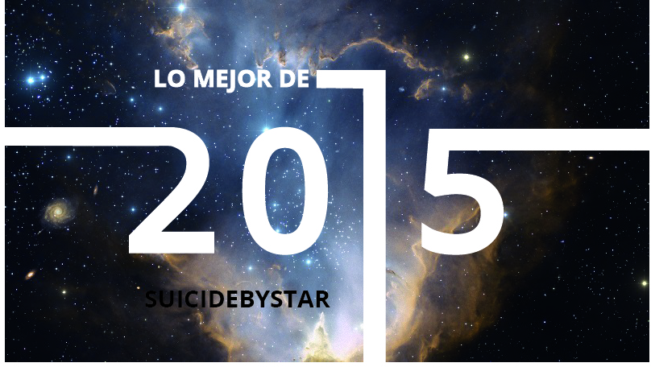
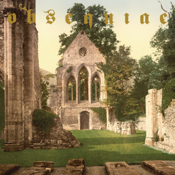
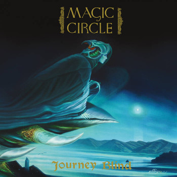
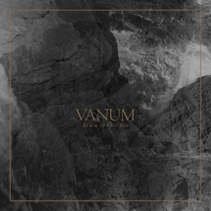
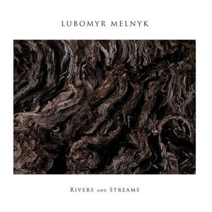
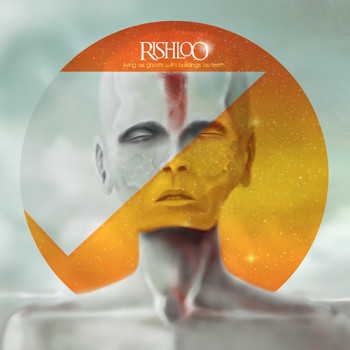
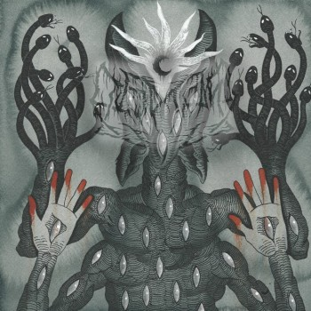
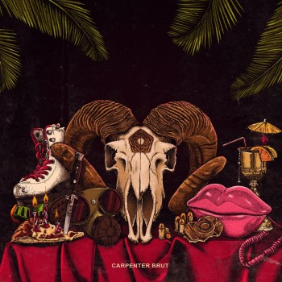
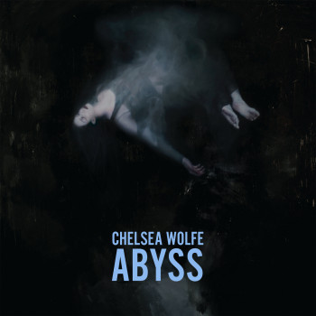
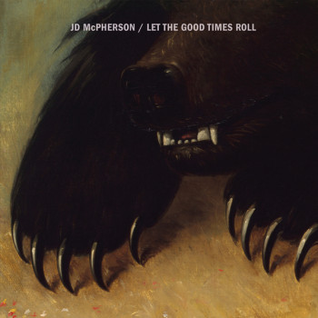

Aquí vamos con la segunda parte de nuestros álbumes de Top 2015. De momento, ya os aseguramos que es el que más densidad de material trve tiene.
20. Obsquiae – Aria Of Vernal Tombs
 | Una de las sorpresas del año para el sector trve del foro, el triunfante segundo disco de Obsequiae las tenía todas para ser una nota a pie de página como lo es la etiqueta de «metal medieval» que se les asocia, pero ha conseguido ganarnos a base de una magia que pocas veces se ven en un disco del entorno del black metal. Desde los interludios de arpa del español Vicente La Camera Mariño, que incluso desliza una de las Cantigas de Santa María a modo de intro, a las épicas melodías de guitarra, todo en Aria of Vernal Tombs nos da ganas de enfundarnos la armadura y salir a cazar dragones. |
19. Magic Circle – Journey Blind
 | Aunque sólo los conocemos desde este mismo mes, Magic Circle se han colado de cabeza en nuestro top símplemente por dejarnos uno de los discos con más carisma, pelotas y riffazos de este 2015. Si lo que te apasiona es el lado más clásico del metal, aquel que tiene a Ronnie James Dio como representante perpetuo, no puedes perderte este Journey Blind, en el que Magic Circle conjugan el mejor heavy y doom más tradicional con la brillantez enorme de que no huela a naftalina ni por un segundo. |
18. Vanum – Realm of Sacrifice
 | El debut de este mini-supergrupo era esperado con cierta ansia dados los músicos que estaban involucrados (mitad Ash Borer, mitad Fell Voices), y por una vez el producto final está a la altura de lo que uno puede esperarse: combinando la electricidad y el hipnotismo de sus bandas madre y añadiendo numerosos toques de black metal europeo, Vanum representan la cristalización de una corriente, el cascadian black metal, cuyo mero nombre aún levanta ampollas. |
17. Lubomyr Melnyk – Rivers And Streams
 | El siempre melancólico pianista ucraniano parece haber concebido su nuevo álbum en dos partes claramente diferencias. Las cuatro primeras piezas muestran el acostumbrado minimalismo de tempo rápido del compositor, un fluir ininterrumpido de notas triste e intenso. En los últimos 20 minutos del álbum se añade sobre el piano un acompañamiento con arreglos de viento, dando lugar a una pieza más profunda y que aporta riqueza al disco en general. |
16. Rishloo – Living As Ghosts With Buildings As Teeth
 | Después de su hiato, Rishloo han vuelto y con ellos la forma del alt-prog-rock que solo se definió pero que nunca se convirtió en popular. Acercándose a coordenadas donde resuenan The Mars Volta, los norteamericanos construyen un complejo discurso de dobles sentidos (tecnificación y virtualización de la realidad) deconstruyendo la instrumentación y consiguiendo expresar epicidad y una pasión radiante e inteligente. Este disco es mi premio “piel de gallina” del año y se merece estar por llevar la intensidad a cotas inesperadas. |
15. Misþyrming – Söngvar Elds og Óreiðu

| El debut de estos islandeses fue temprano favorito y ha conseguido aguantar como uno de los álbumes de black metal del año en un 2015 especialmente prolífico para el género. Misþyrming consiguen destacar con una propuesta tan anclada en la tradición escandinava como dispuesta a rompernos los esquemas a base de melodías intrincadas, incursiones en la disonancia y elementos externos que van desde doom a incluso alguna pincelada de post-punk. Söngvar Elds og Óreiðu es un disco singular, fresco e inteligente, y que tras cada nueva escucha sigue ofreciendo nuevos matices e ideas. Mucho ojo con lo que llegua de Islandia. |
14. Leviathan – Scar Sighted
 | Jef Whitehead es Leviathan, y su Scar Sighted es uno de los artefactos más oscuros e intensos que nos ha dejado el black metal este 2015. La escucha del disco no es para nada sencilla, pero el esfuerzo de desenmarañar semejante tortura sónica bien merece la pena ya que el trabajo está lleno de ideas novedosas sin necesidad de experimentos estrambóticos. |
13. Carpenter Brut – Trilogy
 | Aunque contaba con la ventaja de jugar con el éxito acumulado de dos anteriores EP’s, Carpenter Brut sigue aportando más y más temazos a su repertorio con el tercer EP editado este año y recopilados todos bajo el nombre de Trilogy. Este francés ya se ha convertido en punta de lanza de este movimiento de electrónica retrofuturista que ha ido ganando adeptos y artistas. Si nosotros, ochenteros de nacimiento, aficionados a los videojuegos retro y a la ciencia-ficción, somos víctimas de nuestro tiempo y lugar en el mundo, ¿por qué resistirnos a adorar esta maravilla? |
12. Chelsea Wolfe – Abyss
|  | Chelsea Wolfe es una de las artista que se ha ganado a pulso estar en nuestro radar de manera permanente, y con cada nueva publicación saltan todas las alarmas del hype. Con Abyss la historia se ha repetido y este año hemos podido disfrutar de uno de los trabajos más compactos de su carrera. Sigue siendo heterogéneo, sigue experimentando los caminos que empezó a recorrer en 2013 con Pain is Beauty y por momentos rozamos con los dedos un hipotético (y delicioso) Portishead goes Doom. |
11. JD McPherson – Let The Good Times Roll
 | Algunos pensarán que editar en 2015 un disco de rock’n’roll, hill-billy y aroma soul debería fracasar por anacrónico y tramposo. JD McPherson no solo no traiciona a los géneros más enraizados en la cultura popular americana, sino que de haber sido editado en otra época podría tener consideración de clásico. Let The Good Times Roll es baile, es instituto y cine de verano, es radio, es la ilusión de los tiempos felices, es una voz carismática y perfecta, es la ortodoxia que renuncia a la segregación estilística. |
Apoyános
{kind=link}
{kind=link}
{kind=link}
{kind=link}
{kind=link}
{kind=link}
{kind=link}
{kind=link}
{kind=link}
{kind=link}